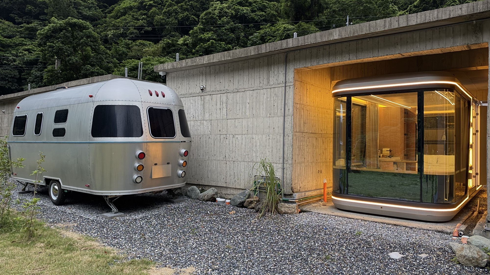
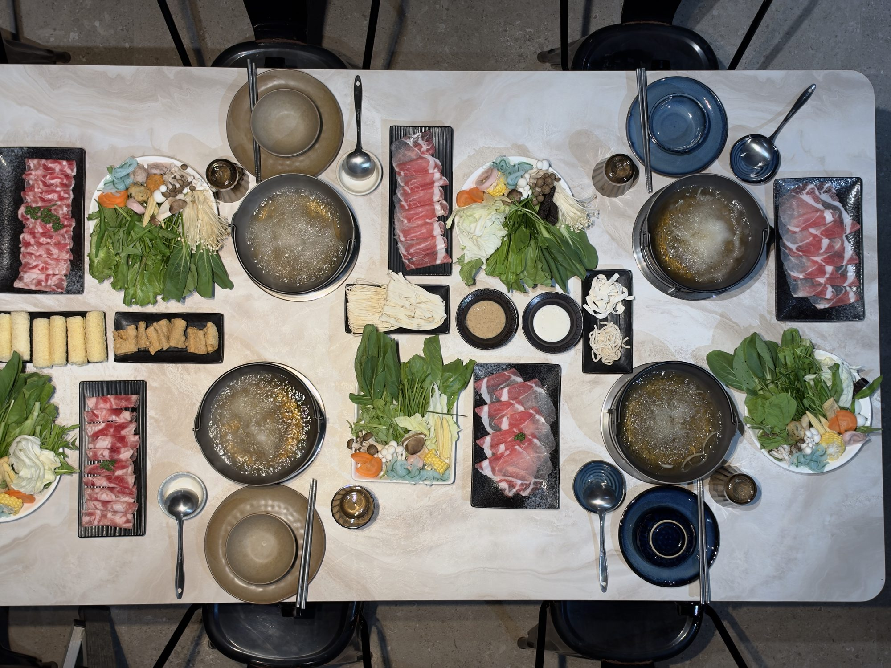
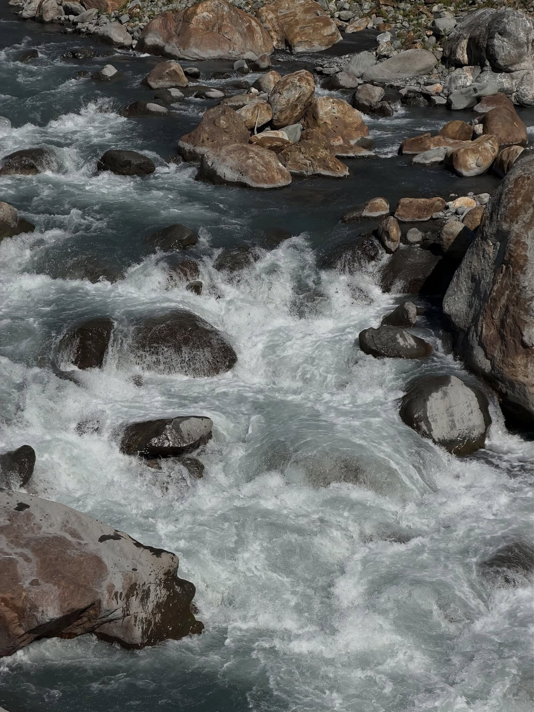
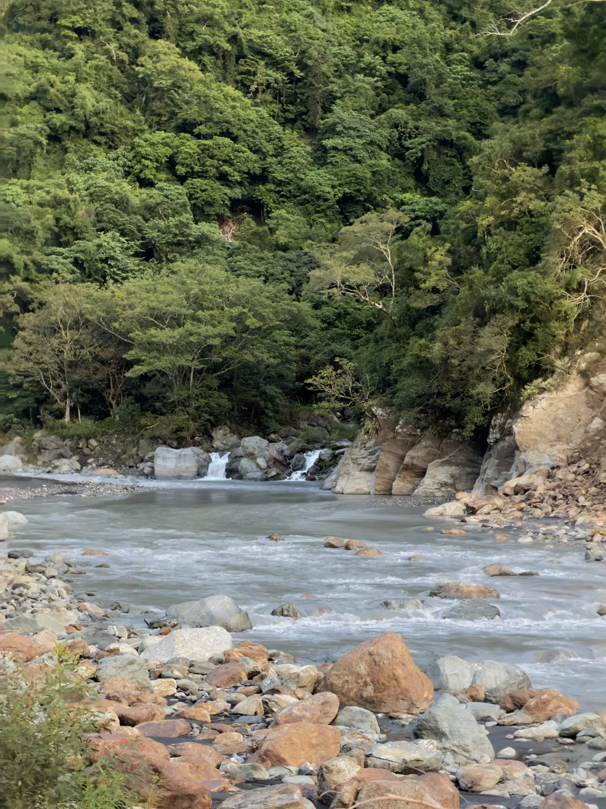

什麼是懶人露營
想露營，卻不想扛裝備、搭帳篷、煮三餐，這就是「懶人露營」。
住宿、寢具與衛浴由營地準備好，有些還會附餐點，也常被叫做豪華露營或野奢露營。
游山谷露位在宜蘭南澳碧候山谷，住的是森林露營車，三餐包含在一泊三食裡，到了就能放鬆。

不用搭帳，也能好好睡在山谷裡
想露營，卻不想扛裝備、搭帳篷、煮三餐，這就是「懶人露營」。
住宿、寢具與衛浴由營地準備好，有些還會附餐點，也常被叫做豪華露營或野奢露營。
游山谷露位在宜蘭南澳碧候山谷，住的是森林露營車，三餐包含在一泊三食裡，到了就能放鬆。



建議帶：換洗衣物、個人保養品、好走的鞋、一件薄外套（山谷早晚溫差較大）、防蚊液。
不用帶：帳篷、睡袋、炊具與寢具。帶毛孩同行的話，請自備尿布墊與集便袋。

一般露營要自己準備帳篷、睡袋、炊具，到營地搭帳、煮飯、收拾。懶人露營則是營地把住宿與設備都準備好，到了就能入住。游山谷露的住宿是森林露營車，有獨立客廳、衛浴與冷暖空調，三餐也包含在一泊三食裡。
森林露營車內有冷暖空調，冬天、夏天都能睡得舒服。山谷早晚溫差較大，建議帶一件薄外套在戶外活動時穿。
不需要。住宿含一泊三食：入住當天的山林感官下午茶、晚間的職人地誌鍋物，以及隔天的森林朝露早餐，都在園區餐廳享用。
適合。每房含 2 人、最多 4 人，6–12 歲兒童與 6 歲以下幼童都有對應的收費方式，訂房時選好人數，系統會自動計算。
可以。旗艦奢選開放寵物友善房（寵物房數量有限），每房最多 2 隻，訂房時把房間加入購物車後，在購物車加選寵物即可。
